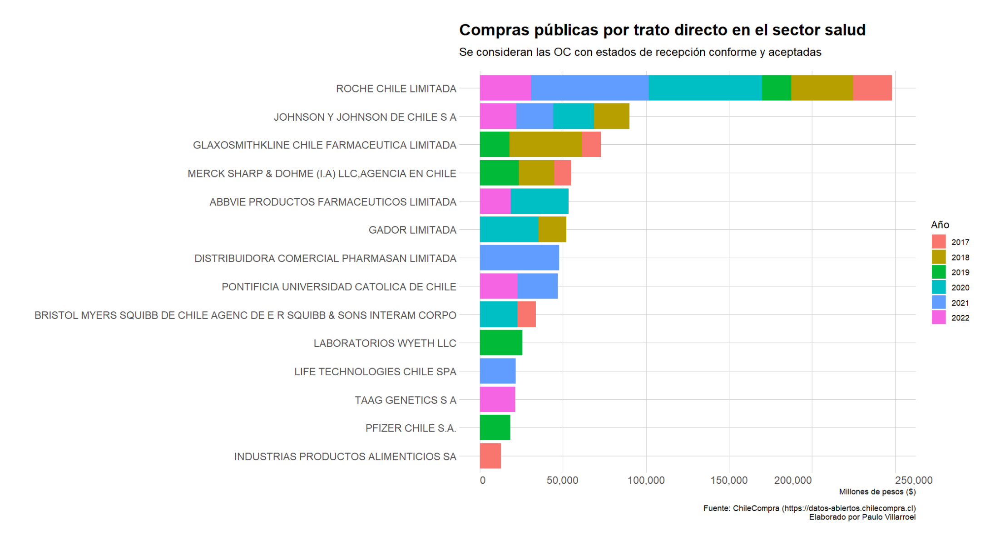
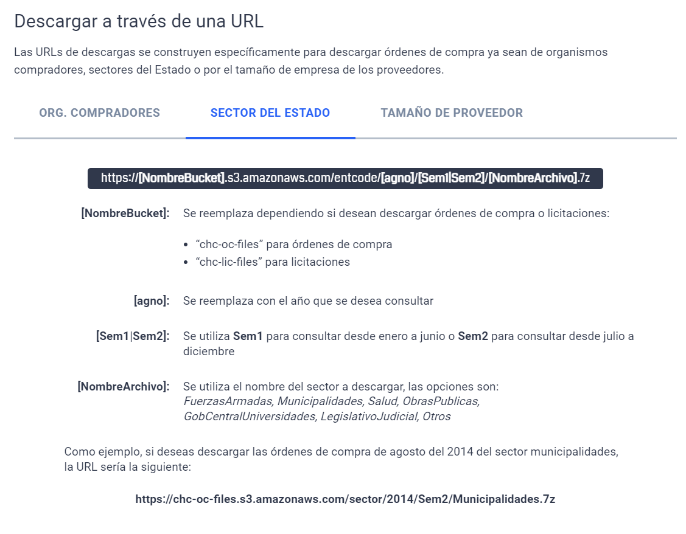
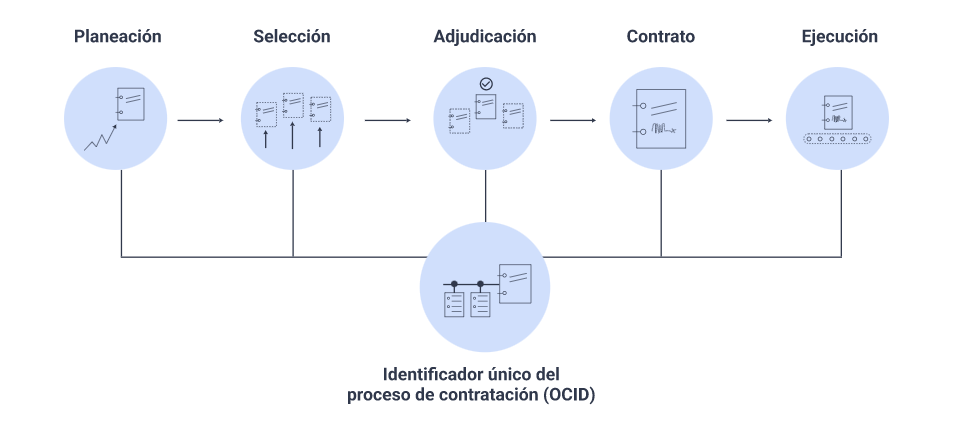
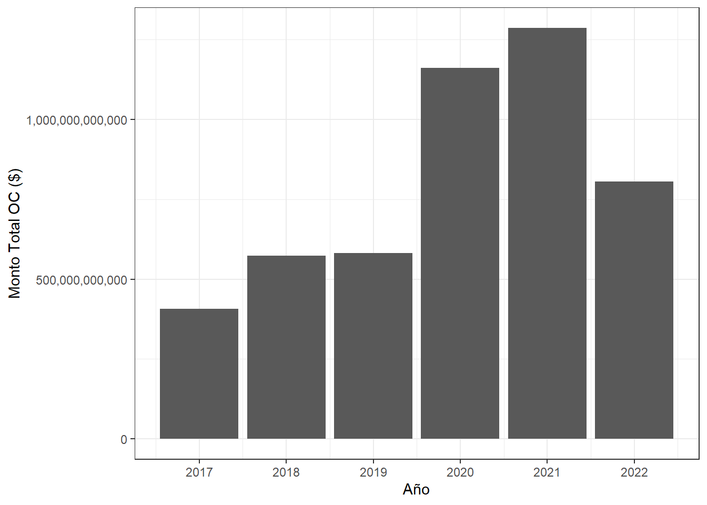

library(tidyverse)
library(here)
library(archive)
library(data.table)
library(lubridate)
library(hrbrthemes)Hola!!
¿Te gustaría aprender a usar datos abiertos de compras públicas (Chile) y realizar este lindo gráfico?

Pues bueno, acá te enseño paso a paso.
Ah! No voy a realizar juicios de valor sobre los resultados. El fin de este artículo es mostrar una forma de usar datos abiertos y utilizando programación, realizar un breve análisis de consolidación de los datos y realizar el gráfico.
Dicho eso, pero sin dejar de mencionar que llama la atención los 3 primeros proveedores a los cuales se le ha comprado más jajaja 😂, vamos con el tema.
Los datos
El objetivo es investigar qué proveedores son los más top en adjudicarse órdenes de compra en salud.
Para ello, usaremos los datos abiertos disponibles en la plataforma de ChileCompra.
Esta web es interesante, pues contiene los datos de todas las compras públicas desde hace muchos años hasta la fecha, que se han realizado por medio de Mercado Público. Por fines de investigación, siempre es una buena idea indagar en qué tipo de datos estás disponibles y cuales no. Además, de entender las distintas variables que contiene. Para eso, puedes revisar la documentación que el mismo sitio posee.
Ok. Partamos! 😎
Cargamos las librerias de R que usaremos:
Vamos a utilizar la descripción que sale en la documentación sobre el uso de URL´s para la descarga de los archivos.
Existe la posibilidad de usar una API, pero requiere de un registro previo que no tengo, por lo cual no usaré esa opción. Sin embargo, esa sería la opción ideal para nuestro caso.

Basado en el ejemplo, como deseo descargar los datos de las órdenes de compra de salud habría que tener construir un link similar a https://chc-oc-files.s3.amazonaws.com/sector/2020/Sem1/Salud.7z
Construyamos un pequeño loop para generar las URL´s necesarias para la descarga de los datos.
En la plataforma hay registros para los años 2007 al 2022, separados por semestres en cada caso. Pero para efectos de este artículo solo descargaré desde el año 2017 en adelante.
total_url <- list()
year <- as.character(2017:2022)
for (i in year) {
url_sem1 <- paste0("https://chc-oc-files.s3.amazonaws.com/sector/", i, "/Sem1/Salud.7z")
url_sem2 <- paste0("https://chc-oc-files.s3.amazonaws.com/sector/", i, "/Sem2/Salud.7z")
total_url[[i]] <- c(url_sem1, url_sem2)
}Veamos las URL´s:
urls <- unlist(total_url, use.names = FALSE)
urls [1] "https://chc-oc-files.s3.amazonaws.com/sector/2017/Sem1/Salud.7z"
[2] "https://chc-oc-files.s3.amazonaws.com/sector/2017/Sem2/Salud.7z"
[3] "https://chc-oc-files.s3.amazonaws.com/sector/2018/Sem1/Salud.7z"
[4] "https://chc-oc-files.s3.amazonaws.com/sector/2018/Sem2/Salud.7z"
[5] "https://chc-oc-files.s3.amazonaws.com/sector/2019/Sem1/Salud.7z"
[6] "https://chc-oc-files.s3.amazonaws.com/sector/2019/Sem2/Salud.7z"
[7] "https://chc-oc-files.s3.amazonaws.com/sector/2020/Sem1/Salud.7z"
[8] "https://chc-oc-files.s3.amazonaws.com/sector/2020/Sem2/Salud.7z"
[9] "https://chc-oc-files.s3.amazonaws.com/sector/2021/Sem1/Salud.7z"
[10] "https://chc-oc-files.s3.amazonaws.com/sector/2021/Sem2/Salud.7z"
[11] "https://chc-oc-files.s3.amazonaws.com/sector/2022/Sem1/Salud.7z"
[12] "https://chc-oc-files.s3.amazonaws.com/sector/2022/Sem2/Salud.7z"Muy bien!! Nos quedó genial!
Ahora nos toca descargar los archivos desde esas direcciones web.
for (i in 1:length(urls)) {
destfile <- paste0(here::here(), "/data/", i, ".7z")
url <- urls[i]
download.file(url, destfile, mode = "wb")
}Los archivos también pueden descargarse desde la misma plataforma sin necesidad de usar estas URL´s, sino que por medio de la propia interfaz de Mercado Público. Sin embargo, me parece mejor idea el usar código para automatizar esas tareas para así evitar errores manuales y facilitar la descarga de nuevos archivos en un futuro.
Fíjate que los archivos vienen comprimidos en un formato 7z.
Si abrimos un archivo, nos encontraremos con otros 3 ó 4 en su interior:
Convenio marco
Licitaciones
Trato directo
Compra ágil
En mi caso, me interesa indagar en los tratos directos.
¿El motivo?
Me parecen más interesantes esos datos, puesto que hay gran variedad de compras y es en esta modalidad de compra en donde, muchas veces, se presta para fraude o problemas de legitimidad. Aunque con este artículo no pretendo realizar un análisis de ese estilo, podría ser de interés para alguien más y ocuparlo como base para fines de investigación.
A continuación realizaré algunos loops para automatizar la extracción de los datos.
Cabe mencionar que se podría hacer en menos lineas de código, pero prefiero dejarlo así para que te sea más simple de seguir el paso a paso.
Para la función de extracción (descomprimir) de más abajo, necesitamos ponerle nombres de los archivos 7z para pasárselo a la función archive_extract().
files_zipped <- list()
for (i in 1:length(urls)) {
file_name_zip <- paste0("data/", i, ".7z")
files_zipped[[i]] <- file_name_zip
}
files_zipped <- unlist(files_zipped, use.names = FALSE)
files_zipped [1] "data/1.7z" "data/2.7z" "data/3.7z" "data/4.7z" "data/5.7z"
[6] "data/6.7z" "data/7.7z" "data/8.7z" "data/9.7z" "data/10.7z"
[11] "data/11.7z" "data/12.7z"Los archivos de los ultimos 2 años son diferentes a los anteriores y el nombre del archivo comprimido es distinto. Para resolver eso, implementé un if(), según qué archivo sea.
here::i_am("index.qmd")
oc <- list()
for (i in files_zipped) {
archive_extract(archive = i, dir = "data")
if (file.exists("data/17TratoDirecto.csv")) {
oc[[i]] <- fread("data/17TratoDirecto.csv", encoding = "Latin-1")
} else {
oc[[i]] <- fread("data/17OCTratoDirecto.csv", encoding = "Latin-1")
}
}Ahora pasamos el objeto que nos habíamos creado a un data.frame y lo “aplanamos” para no tener problemas después con los análisis. Para lo último, usamos unnest().
all_data <- rbindlist(oc) |>
unnest(cols = c())Veamos todas las variables que contiene el archivo.
dim(all_data) #Filas y Columnas[1] 1429423 44names(all_data) #Nombre de variables [1] "codigoOC" "FechaEnvioOC" "NombreOC"
[4] "DescripcionOC" "EstadoOC" "ProcedenciaOC"
[7] "MonedaOC" "MontoNetoOC" "DescuentosOC"
[10] "CargosOC" "ImpuestosOC" "MontoTotalOC"
[13] "ImpuestosOC_CLP" "MontoNetoOC_CLP" "MetodoPago"
[16] "TipoDespacho" "Financiamiento" "UnidadCompra"
[19] "UnidadCompraRUT" "RegionUnidadCompra" "entCode"
[22] "Institucion" "Sector" "Proveedor"
[25] "ProveedorRUT" "ActividadProveedor" "TamanoProveedor"
[28] "RegionProveedor" "RubroN1" "RubroN2"
[31] "RubroN3" "CodigoProductoONU" "ONUProducto"
[34] "NombreItem" "DescripcionItem" "CantidadItem"
[37] "UnidadMedida" "MonedaItem" "MontoNetoItem"
[40] "DescuentoItem" "CargosItem" "ImpuestoEspecificoItem"
[43] "MontoTotalItem" "MontoNetoItemCLP" Importante
Los archivos descargados son grandes y cuando se descrompimen, los son mucho más! Algunos llegan a pesar más de 200 o 300 Mb. De hecho, el objeto con todos los datos combinados sobrepasa 1 GB y tiene casi 1 millón y medio de filas. Con un Excel no podrás abrirlo, pues supera su límite. Por eso es importante usar programación. Otra instancia sería levantar un servidor SQL y cargar los datos, pero me parece que no vale la pena paa estos efectos.
Como los archivos descargados son bastante grandes, es mejor borrarlos, pues ya tenemos lo que necesitamos.
unlink(here::here("data/*"), recursive = TRUE, force = TRUE)Análisis
Voy a considerar sólo las órdenes de compra (OC) en estados de recepción conforme y aceptadas. Esta es una decisión que tomé en base a lo que se menciona en el portal, en especial, a los estándares OCDS.
Estos estándares permiten tener un lenguaje común sobre el estado de las OC y un formato estructurado que facilite la revisión, comprensión y consumo de los datos.
La decisión de usar solo esas etapas es más que nada para sacar del análisis todas aquellas OC que fueron rechazadas, tienen observaciones o sufrieron modificaciones en el camino. La idea es dejar aquellas efectivamente ejecutadas o que si bien aún no ocurren, ya fueron aceptadas por las partes.

Algo que me parece interesante de observar, es el gasto asociado a esas OC durante los años analizados.
suppliers <- all_data |>
filter(EstadoOC %in% c("Recepcion Conforme", "Aceptada")) |>
separate(FechaEnvioOC, into = c("Fecha", "Hora"), sep = " ", remove = TRUE) |>
mutate(Fecha = dmy(Fecha)) |>
group_by(Proveedor, year = year(Fecha)) |>
summarise(mount = sum(as.numeric(MontoTotalItem), na.rm = TRUE)) |>
ungroup()suppliers |>
group_by(year) |>
summarise(mount = sum(mount, na.rm = TRUE)) |>
ggplot(aes(year, mount)) +
geom_col() +
scale_y_continuous(labels = scales::comma) +
scale_x_continuous(breaks = c(2017, 2018, 2019, 2020, 2021, 2022)) +
theme_bw() +
labs(
x = "Año",
y = "Monto Total OC ($)"
)
Vemos que en los años 2022 y 2021 los montos asociados a este tipo de OC aumentario de forma considerable respecto de los años anteriores. Posiblemente, eso tenga mucha relación con la pandemia y la necesidad de contar rápidamente con insumos, medicamentos, infraestructura, personal, exámenes y muchas otras cosas.
Si vemos los proveedores, podemos hace un ránking de éstos y revisar cuáles fueron los 5 de cada año que tuvieron mayores cantidades de transacciones por OC:
top5_by_year <- suppliers |>
mutate(Proveedor = str_to_upper(Proveedor)) |>
arrange(desc(mount)) |>
group_by(year) |>
do(head(., 5)) |>
ungroup()
top5_by_year |>
DT::datatable()Si tienes interés en profundizar en el tema, ya tienes todo lo necesario. Tienes los datos y el código para replicarlo. Puedes seguir investigando los registros, de seguro hay cosas entretenidas. Quizás quieras dirigir el análisis a un proveedor en específico o a una institución pública en especial. La verdad, no hay límites. Solo tu curiosidad e imaginación.
Gráfico
Podemos graficarlo para ver mejor esos datos y analizar el comportamiento a lo largo de los años de los proveedores con más montos en OC.
Para eso usaremos la famosa libreria ggplot2 con algunos agregados para hacer el gráfico más atractivo.
plot <- top5_by_year |>
mutate(Proveedor = fct_reorder(Proveedor, mount, .fun = "sum"),
mount_mill = mount/1e6) |>
ggplot(aes(Proveedor, mount_mill, fill = factor(year))) +
geom_col(position = "stack") +
coord_flip() +
scale_y_continuous(labels = scales::comma) +
expand_limits( y = c(0, 250000)) +
labs(title = "Compras públicas por trato directo en el sector salud",
subtitle = "Se consideran las OC con estados de recepción conforme y aceptadas",
x = "",
y = "Millones de pesos ($)",
fill = "Año",
caption = "Fuente: ChileCompra (https://datos-abiertos.chilecompra.cl)\nElaborado por Paulo Villarroel") +
theme_ipsum_rc(grid = "XY") +
theme(axis.text.x = element_text(hjust = c(0, 0.5, 0.5, 0.5, 1)))Si quieres ver la imagen más grande, dale al boton derecho y abrir en nueva ventena.
Si, Si. Es el mismo gráfico del inicio 🥰
Listo!!
Finalmente
Espero que te haya gustado este artículo. Traté de ser lo más explicativo posible. Además, de dejarte el paso a paso para que tu sigas adelante.
Los datos abiertos son una muy buena oportunidad para que la ciudadanía pueda realizar fiscalización y auditoria al funcionamiento de los organismos públicos. Eso si, se requiere de ciertos conocimientos para saber dónde encontrar esos datos y para poder analizarlos. Es mi deseo que este artículo te sea de ayuda, despierte tu curiosidad y seamos agentes de divulgación científica de cara a la gente.
Nos vemos!!